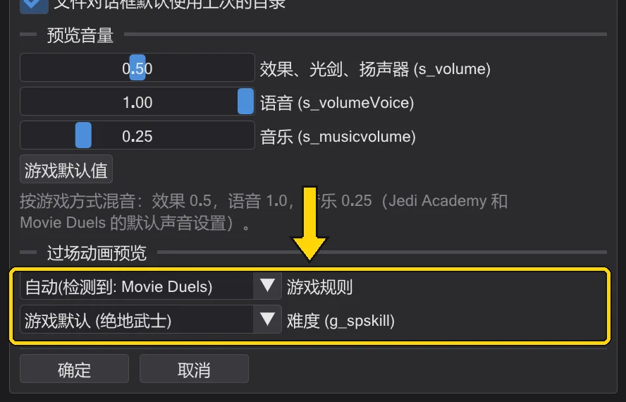

参考
设置与更新
程序在哪里保存路径和选项、如何修改快捷键,以及更新如何到来。
游戏文件夹#
编辑 → 游戏目录 列出程序读取其 .pk3 的文件夹,每个都有 上移、下移、移除 和 打开。最下面的优先于上面所有文件夹,正如引擎中 fs_game 覆盖 base。没有压缩包的文件夹会给出提示——说明路径不对。

Jedi Outcast(JK2)#
BehavEd-Remake 也可以用于原版 Jedi Outcast。它的编译脚本(.ibi,1.57 版)和地图与 Jedi Academy 格式相同,ICARUS 的命令也相同。在 首选项 → 游戏规则 中,Jedi Outcast(JK2) 是 OpenJK 和 Movie Duels 之外的第三套规则;依据是 OpenJK 中的 JK2 游戏代码(codeJK2)。
- 命令集:在 Jedi Outcast 规则下,动画、任务目标、行为状态和 SET_ 字段的列表来自 JK2(
data/jk2)。Jedi Outcast 的assets0.pk3中的 1356 个脚本里,有 1352 个可以逐字节相同地重新编译;检查后剩下 326 条提示,都是 Raven 脚本中真实存在的错误。首选项中自己指定的命令文件始终优先。 - 游戏文件夹:Jedi Outcast 在 编辑 → 游戏目录 中有自己的列表(Jedi Outcast 游戏文件夹 (.pk3))。两个游戏有同名但内容不同的文件,因此两个列表从不混用;使用当前规则的列表。添加游戏目录… 会自动把 Jedi Outcast 文件夹放进它的列表。
- 自动:只设置了 Jedi Outcast 文件夹,或用 加载任务… 打开 Jedi Outcast 任务时(文件夹旁有
jk2sp.exe,或含有kejim_post等 JK2 地图),使用 Jedi Outcast。有 Movie Duels 文件夹时总是 Movie Duels;不确定时使用 OpenJK。 - 角色:NPC 来自
ext_data/NPCs.cfg,玩家是kyle(脚本中也是),人形角色使用 JK2 的 72 根骨骼的骨架,JK2 的 NPC 类别会选用 JK2 的角色。光剑不需要.sab文件:剑柄和剑刃长度取决于 NPC 类别(Desann 48、Reborn 32、其他 40),颜色取自 NPCs.cfg 中的saberColor。 - 行走与镜头:NPC 使用 JK2 的导航走向路点:路径畅通时直线行走,否则沿
maps/<地图>.nav中的路点网络行走(文件缺失或与地图不符时由路点生成),速度规则与 JK2 相同——奔跑立即达到全速,步行逐步加速,接近目标时 NPC 会减速。武器来自 JK2 的 NPC 表,NPC Kyle 使用玩家的武器,光剑刃像 JK2 一样闪烁。镜头的 FOLLOW 和抖动晚一帧显示,镜头 ROFF 忽略注释,yavin_swamp的沼泽水不是实体,雨和雪按 JK2 处理。对找不到目标的 SET_NAVGOAL 使用dowait会像游戏中一样永远等待。
尚未与 Jedi Outcast 完全一致:被其他 NPC 挡住的 NPC 不会把对方推开,场景中不会记住被阻挡的路点和连接,也不显示字幕。
首选项#
编辑 → 首选项(或操作栏中的 首选项,Alt+P)包含原版 BehavEd 的选项以及过场预览的选项:
- 目录:脚本路径、命令描述文件(定义所有命令的
.bhc——重新加载命令模型 重新读取)、源文件路径。 - 启动时重新打开上次的文件、下拉列表按字母排序、使用备用配色图标、打开/新建/退出时询问、文件对话框默认使用上次的目录。
- 预览音量:效果、光剑、扬声器 (s_volume)、语音 (s_volumeVoice)、音乐 (s_musicvolume)——与游戏的声音设置相同;游戏默认值 恢复为 0.5 / 1.0 / 0.25。预览的声音如何播放:与游戏一致的声音。
- 过场动画预览 → 游戏规则 决定过场预览模仿哪个游戏:OpenJK(原版 Jedi Academy)或 Movie Duels——两者的游戏代码在一些地方算法不同:NPC 按类别和难度的转身速度、NPC 多久重新转向并转身一次(OpenJK 每 100 毫秒,Movie Duels 每 50 毫秒)、默认难度、光剑碰撞、cg_fovAspectAdjust 和游戏窗口、角色身上的 ROFF 声音。第三种选择是 Jedi Outcast(Jedi Outcast(JK2))。“自动”在游戏文件夹中有 Movie Duels 文件夹时选择 Movie Duels,遇到 Jedi Outcast 文件夹时选择 Jedi Outcast,否则选择 OpenJK;加载地图时状态列表会显示所用的规则。宽高比和 cg_fovAspectAdjust 本身位于 视图设置 → 游戏画面(预览与透过镜头观看)。
- 难度 (g_spskill):学徒、绝地、绝地武士、绝地大师——即游戏的 g_spskill。第一项是游戏的默认值(Movie Duels 为 绝地武士,OpenJK 为 学徒)。与游戏一样,它会改变风暴兵、Reborn 和其他一些 NPC 的转身速度、塔斯肯袭击者的步行和奔跑速度(从 绝地武士 起),以及两把光剑要靠多近才会相撞。地图标记为其他难度(或带
notsingle)的实体会被省略,因为游戏在加载地图时会移除它们;脚本中点名但其生成器被这样移除的 NPC 也是如此(对它的affect不起作用)。更改后预览会立即重建。 - 语言、主题和界面大小位于 视图 菜单。

修改快捷键#
编辑 → 键盘快捷键 列出所有带快捷键的操作。单击某个快捷键,再按新键;Esc 取消,Backspace 清除。已被占用的键会提示。默认值见 键盘快捷键。
更新与更新日志#
帮助 → 检查更新 会向 GitHub 查询新版本并显示更新内容;下载并安装 会替换程序文件(使用单独的 .exe 时只替换程序,无论文件名是什么)并提示重启。旁边的开关决定是否在启动时检查。帮助 → 更新日志 按版本以你的语言显示修复和新增的内容——更新后会自动打开一次。